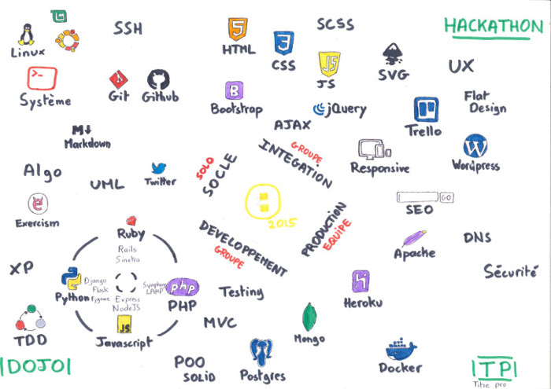

Durant le 1er mois, découverte, pour tous, en autonomie du code.
1ers pas sur des exercices en HTML/CSS.
Structure / squelette d'une application web
"Maquillage, mise en beauté de l'application"
Pour la formation, nous avons eu le choix entre 2 parcours : "Front-end" et "Back-end"
"Front-end", le design de l'application
"Back-end", la partie immergée de l'application
Les développeurs Front-end et Back-end doivent travailler en étroite collaboration. Cette collaboration est indispensable pour mener au mieux le projet.
Dans le cadre de Simplon.VE, ceux ayant choisi la voie du "Back" ont vu différents langages, tels que Ruby, Python, Javascript(NodeJS) ou encore Php
Ceux ayant choisi la voie du "Front" ont abordé des sujets comme les animations, le choix des images, la création de logos, l'ergonomie.
Tout au long de ces phases de découvertes, nous avons travaillé en groupe sur des "chicken-projects"
Par la suite nous nous sommes professionnalisés à travers des "hackathons", des stages et la création du site officiel de Simplon.VE
Marathon du numérique
Atelier pour initier les enfants à l'univers du numérique, par le biais de logiciels ludiques, tel que "Scratch".
www.kidscoding07.herokuapp.comDans le cadre de la formation, nous devions réaliser 70h de stage.
Cela nous a permis de mettre en pratique pour de vrais clients nos acquis à Simplon.VE